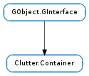

| static | class_find_child_property(klass, property_name) |
| static | class_list_child_properties(klass) |
| add(*actors) | |
| add_actor(actor) | |
| child_get_property(child, property_name) | |
| child_notify(child, pspec) | |
| child_set_property(child, property_name, value) | |
| create_child_meta(actor) | |
| destroy_child_meta(actor) | |
| find_child_by_name(child_name) | |
| foreach(callback, *user_data) | |
| foreach_with_internals(callback, *user_data) | |
| get_child_meta(actor) | |
| get_children() | |
| lower_child(actor, sibling) | |
| raise_child(actor, sibling) | |
| remove(*actors) | |
| remove_actor(actor) | |
| sort_depth_order() |
None
| Name | Parameters | Return | Description |
|---|---|---|---|
| actor-added | Clutter.Actor | The ::actor-added signal is emitted each time an actor has been added to container. | |
| actor-removed | Clutter.Actor | The ::actor-removed signal is emitted each time an actor is removed from container. | |
| child-notify | Clutter.Actor, GObject.ParamSpec | The ::child-notify signal is emitted each time a property is being set through the Clutter.Container.child_set () and Clutter.Container.child_set_property () calls. |
Bases: GObject.GInterface
Clutter.Container is an opaque structure whose members cannot be directly accessed
| Parameters: |
|
|---|---|
| Returns: | The GObject.ParamSpec for the property or None if no such property exist. |
| Return type: |
Looks up the GObject.ParamSpec for a child property of klass.
| Parameters: | klass (GObject.ObjectClass) – a GObject.ObjectClass implementing the Clutter.Container interface. |
|---|---|
| Returns: | an array of GObject.ParamSpec s which should be freed after use. |
| Return type: | [GObject.ParamSpec] |
Returns an array of GObject.ParamSpec for all child properties.
Adds a list of Clutter.Actor s to container. Each time and actor is added, the “actor-added” signal is emitted. Each actor should be parented to container, which takes a reference on the actor. You cannot add a Clutter.Actor to more than one Clutter.Container.
This function will call Clutter.ContainerIface.add(), which is a deprecated virtual function. The default implementation will call Clutter.Actor.add_child ().
| Parameters: | actor (Clutter.Actor) – the first Clutter.Actor to add |
|---|
Adds a Clutter.Actor to container. This function will emit the “actor-added” signal. The actor should be parented to container. You cannot add a Clutter.Actor to more than one Clutter.Container.
This function will call Clutter.ContainerIface.add(), which is a deprecated virtual function. The default implementation will call Clutter.Actor.add_child ().
| Parameters: |
|
|---|
Gets a container specific property of a child of container, In general, a copy is made of the property contents and the caller is responsible for freeing the memory by calling GObject.Value.unset ().
Note that Clutter.Container.child_set_property () is really intended for language bindings, Clutter.Container.child_set () is much more convenient for C programming.
| Parameters: |
|
|---|
Calls the Clutter.ContainerIface.child_notify() virtual function of Clutter.Container. The default implementation will emit the Clutter.Container ::child-notify signal.
| Parameters: |
|
|---|
Sets a container-specific property on a child of container.
| Parameters: | actor (Clutter.Actor) – a Clutter.Actor |
|---|
Creates the Clutter.ChildMeta wrapping actor inside the container, if the Clutter.ContainerIface ::child-meta-type class member is not set to GObject.TYPE_INVALID.
This function is only useful when adding a Clutter.Actor to a Clutter.Container implementation outside of the Clutter.Container ::add () virtual function implementation.
Applications should not call this function.
| Parameters: | actor (Clutter.Actor) – a Clutter.Actor |
|---|
Destroys the Clutter.ChildMeta wrapping actor inside the container, if any.
This function is only useful when removing a Clutter.Actor to a Clutter.Container implementation outside of the Clutter.Container ::add () virtual function implementation.
Applications should not call this function.
| Parameters: | child_name (str) – the name of the requested child. |
|---|---|
| Returns: | The child actor with the requested name, or None if no actor with that name was found. |
| Return type: | Clutter.Actor |
Finds a child actor of a container by its name. Search recurses into any child container.
| Parameters: |
|
|---|
Calls callback for each child of container that was added by the application (with Clutter.Container.add_actor ()). Does not iterate over “internal” children that are part of the container’s own implementation, if any.
This function calls the Clutter.ContainerIface.foreach() virtual function, which has been deprecated.
| Parameters: |
|
|---|
Calls callback for each child of container, including “internal” children built in to the container itself that were never added by the application.
This function calls the Clutter.ContainerIface.foreach_with_internals() virtual function, which has been deprecated.
| Parameters: | actor (Clutter.Actor) – a Clutter.Actor that is a child of container. |
|---|---|
| Returns: | the Clutter.ChildMeta for the actor child of container or None if the specifiec actor does not exist or the container is not configured to provide Clutter.ChildMeta s |
| Return type: | Clutter.ChildMeta |
Retrieves the Clutter.ChildMeta which contains the data about the container specific state for actor.
| Returns: | a list of Clutter.Actor s. Use GLib.List.free () on the returned list when done. |
|---|---|
| Return type: | [Clutter.Actor] |
Retrieves all the children of container.
| Parameters: |
|
|---|
Lowers actor to sibling level, in the depth ordering.
This function calls the Clutter.ContainerIface.lower() virtual function, which has been deprecated. The default implementation will call Clutter.Actor.set_child_below_sibling ().
| Parameters: |
|
|---|
Raises actor to sibling level, in the depth ordering.
This function calls the Clutter.ContainerIface.raise() virtual function, which has been deprecated. The default implementation will call Clutter.Actor.set_child_above_sibling ().
Removes a None terminated list of Clutter.Actor s from container. Each actor should be unparented, so if you want to keep it around you must hold a reference to it yourself, using GObject.Object.ref (). Each time an actor is removed, the “actor-removed” signal is emitted by container.
This function will call Clutter.ContainerIface.remove(), which is a deprecated virtual function. The default implementation will call Clutter.Actor.remove_child ().
| Parameters: | actor (Clutter.Actor) – a Clutter.Actor |
|---|
Removes actor from container. The actor should be unparented, so if you want to keep it around you must hold a reference to it yourself, using GObject.Object.ref (). When the actor has been removed, the “actor-removed” signal is emitted by container.
This function will call Clutter.ContainerIface.remove(), which is a deprecated virtual function. The default implementation will call Clutter.Actor.remove_child ().
Sorts a container’s children using their depth. This function should not be normally used by applications.